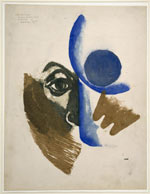

|
|
Japanese Prints
during the Allied Occupation 1945-1952 In 1945 much of urban Japan lay in ruins, the land occupied by foreign powers for the first time in the country’s history. To many Japanese it seemed that everything had been lost, but in fact the nation would quickly demonstrate - and on a much larger scale than ever before - its ability to recover physically, economically and culturally from apparent disaster. With the realisation that the Occupation Forces were not oni (‘demons’) but largely benevolent and genial individuals, the concept of a ‘New Japan’ was quickly promulgated. It was one which had attractions to people who had lived in many cases all their lives under a totalitarian regime. All the visual arts began to benefit almost from the outset, and the years between 1945 and 1952 demonstrated increasing confidence and considerable achievement in painting, calligraphy, prints, ceramics and other media. This illuminating exhibition examines in detail how one school of printmakers, under the pioneering leadership of Onchi Koshiro (1891-1955), managed to survive the Pacific War and as artists found themselves among those calling for a new search for the nation’s heart in its aesthetic traditions. Although many continued to suffer from the privations of the war years, they also received unexpected appreciation and support from artists and administrators among the Allied occupying forces. Symbolic of this process was the meeting of the American graphic artist Ernst Hacker (1917-87), posted to Tokyo in Spring 1946, with Onchi and his circle and Munakata Shiko (1903-75), who was then almost unknown. On meeting Onchi, Hacker’s own print style rapidly changed from the monochrome and representational to the richly coloured and abstract idiom which Onchi had been developing. By 1952, when the Allied Occupation ended, Onchi and his circle and Munakata were being eagerly collected in the United States and these two, introduced to the world by their American admirers, are now recognised as Japan’s greatest print artists of the 20th century. Prints, photographs and other archival material acquired by Ernst Hacker during the post-war years and recently given to the Museum by his widow form the basis of this revealing exhibition. A catalogue by Lawrence Smith, Japanese Prints during the Allied Occupation, 1945 - 1952: Onchi Koshiro, Ernst Hacker and the First Thursday Society, with 40 colour and 75 black and white illustrations is published by British Museum Press to accompany the exhibition, price £35.00 For images or further information please call the Press Office on 020 7323 8583/8525 or email media@thebritishmuseum.ac.uk |
 Saito Kiyoshi
(1907-97), Alonzo M Freeman
(dates unknown), Onchi Koshiro
(1891-1955),
|
||
|
|
|||